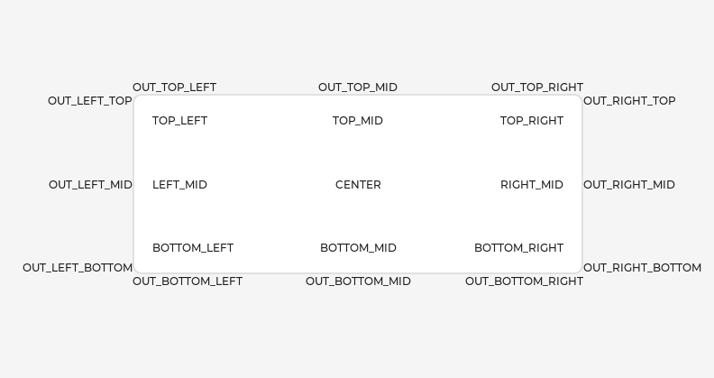

Base object (lv_obj)¶
Overview¶
The 'Base Object' implements the basic properties of widgets on a screen, such as:
coordinates
parent object
children
contains the styles
attributes like Clickable, Scrollable, etc.
In object-oriented thinking, it is the base class from which all other objects in LVGL are inherited.
The functions and functionalities of the Base object can be used with other widgets too. For example lv_obj_set_width(slider, 100)
The Base object can be directly used as a simple widget: it's nothing more than a rectangle. In HTML terms, think of it as a <div>.
Coordinates¶
Only a small subset of coordinate settings is described here. To see all the features of LVGL (padding, coordinates in styles, layouts, etc) visit the Coordinates page.
Size¶
The object size can be modified on individual axes with lv_obj_set_width(obj, new_width) and lv_obj_set_height(obj, new_height), or both axes can be modified at the same time with lv_obj_set_size(obj, new_width, new_height).
Position¶
You can set the position relative to the parent with lv_obj_set_x(obj, new_x) and lv_obj_set_y(obj, new_y), or both axes at the same time with lv_obj_set_pos(obj, new_x, new_y).
Alignment¶
You can align the object on its parent with lv_obj_set_align(obj, LV_ALIGN_...). After this every x and y setting will be relative to the set alignment mode.
For example, this will shift the object by 10;20 px from the center of its parent:
lv_obj_set_align(obj, LV_ALIGN_CENTER);
lv_obj_set_pos(obj, 10, 20);
//Or in one function
lv_obj_align(obj, LV_ALIGN_CENTER, 10, 20);
To align one object to another use: lv_obj_align_to(obj_to_align, obj_referece, LV_ALIGN_..., x, y)
For example, to align a text below an image: lv_obj_align_to(text, image, LV_ALIGN_OUT_BOTTOM_MID, 0, 10).
The following align types exist: 
Parents and children¶
You can set a new parent for an object with lv_obj_set_parent(obj, new_parent). To get the current parent, use lv_obj_get_parent(obj).
To get a specific child of a parent use lv_obj_get_child(parent, idx). Some examples for idx:
0get the child created first1get the child created second-1get the child created last
The children can be iterated lke this:
uint32_t i;
for(i = 0; i < lv_obj_get_child_cnt(parent); i++) {
lv_obj_t * child = lv_obj_get_child(parent, i);
/*Do something with child*/
}
lv_obj_get_index(obj) returns the index of the object in its parent. It is equivalent to the number of younger children in the parent.
You can bring an object to the foreground or send it to the background with lv_obj_move_foreground(obj) and lv_obj_move_background(obj).
You can change the index of an object in its parent using lv_obj_move_to_index(obj, index).
You can swap the position of two objects with lv_obj_swap(obj1, obj2).
Display and Screens¶
At the highest level of the LVGL object hierarchy is the display which represents the driver for a display device (physical display or simulator). A display can have one or more screens associated with it. Each screen contains a hierarchy of objects for graphical widgets representing a layout that covers the entire display.
When you have created a screen like lv_obj_t * screen = lv_obj_create(NULL), you can make it active with lv_scr_load(screen). The lv_scr_act() function gives you a pointer to the active screen.
If you have multiple displays, it's important to know that the screen functions operate on the most recently created display or the one explicitly selected with lv_disp_set_default.
To get an object's screen use the lv_obj_get_screen(obj) function.
Events¶
To set an event callback for an object, use lv_obj_add_event_cb(obj, event_cb, LV_EVENT_..., user_data),
To manually send an event to an object, use lv_event_send(obj, LV_EVENT_..., param)
Read the Event overview to learn more about events.
Styles¶
Be sure to read the Style overview. Here only the most essential functions are described.
A new style can be added to an object with the lv_obj_add_style(obj, &new_style, selector) function.
selector is an ORed combination of part and state(s). E.g. LV_PART_SCROLLBAR | LV_STATE_PRESSED.
The base objects use LV_PART_MAIN style properties and LV_PART_SCROLLBAR with the typical background style properties.
Flags¶
There are some attributes which can be enabled/disabled by lv_obj_add/clear_flag(obj, LV_OBJ_FLAG_...):
LV_OBJ_FLAG_HIDDENMake the object hidden. (Like it wasn't there at all)LV_OBJ_FLAG_CLICKABLEMake the object clickable by input devicesLV_OBJ_FLAG_CLICK_FOCUSABLEAdd focused state to the object when clickedLV_OBJ_FLAG_CHECKABLEToggle checked state when the object is clickedLV_OBJ_FLAG_SCROLLABLEMake the object scrollableLV_OBJ_FLAG_SCROLL_ELASTICAllow scrolling inside but with slower speedLV_OBJ_FLAG_SCROLL_MOMENTUMMake the object scroll further when "thrown"LV_OBJ_FLAG_SCROLL_ONEAllow scrolling only one snappable childrenLV_OBJ_FLAG_SCROLL_CHAIN_HORAllow propagating the horizontal scroll to a parentLV_OBJ_FLAG_SCROLL_CHAIN_VERAllow propagating the vertical scroll to a parentLV_OBJ_FLAG_SCROLL_CHAINSimple packaging for (LV_OBJ_FLAG_SCROLL_CHAIN_HOR | LV_OBJ_FLAG_SCROLL_CHAIN_VER)LV_OBJ_FLAG_SCROLL_ON_FOCUSAutomatically scroll object to make it visible when focusedLV_OBJ_FLAG_SCROLL_WITH_ARROWAllow scrolling the focused object with arrow keysLV_OBJ_FLAG_SNAPPABLEIf scroll snap is enabled on the parent it can snap to this objectLV_OBJ_FLAG_PRESS_LOCKKeep the object pressed even if the press slid from the objectLV_OBJ_FLAG_EVENT_BUBBLEPropagate the events to the parent tooLV_OBJ_FLAG_GESTURE_BUBBLEPropagate the gestures to the parentLV_OBJ_FLAG_ADV_HITTESTAllow performing more accurate hit (click) test. E.g. accounting for rounded cornersLV_OBJ_FLAG_IGNORE_LAYOUTMake the object positionable by the layoutsLV_OBJ_FLAG_FLOATINGDo not scroll the object when the parent scrolls and ignore layoutLV_OBJ_FLAG_OVERFLOW_VISIBLEDo not clip the children's content to the parent's boundaryLV_OBJ_FLAG_LAYOUT_1Custom flag, free to use by layoutsLV_OBJ_FLAG_LAYOUT_2Custom flag, free to use by layoutsLV_OBJ_FLAG_WIDGET_1Custom flag, free to use by widgetLV_OBJ_FLAG_WIDGET_2Custom flag, free to use by widgetLV_OBJ_FLAG_USER_1Custom flag, free to use by userLV_OBJ_FLAG_USER_2Custom flag, free to use by userLV_OBJ_FLAG_USER_3Custom flag, free to use by userLV_OBJ_FLAG_USER_4Custom flag, free to use by user
Some examples:
/*Hide on object*/
lv_obj_add_flag(obj, LV_OBJ_FLAG_HIDDEN);
/*Make an object non-clickable*/
lv_obj_clear_flag(obj, LV_OBJ_FLAG_CLICKABLE);
Groups¶
Read the Input devices overview to learn more about Groups.
Objects are added to a group with lv_group_add_obj(group, obj), and you can use lv_obj_get_group(obj) to see which group an object belongs to.
lv_obj_is_focused(obj) returns if the object is currently focused on its group or not. If the object is not added to a group, false will be returned.
Extended click area¶
By default, the objects can be clicked only within their bounding area. However, this can be extended with lv_obj_set_ext_click_area(obj, size).
Events¶
LV_EVENT_VALUE_CHANGEDwhen theLV_OBJ_FLAG_CHECKABLEflag is enabled and the object clicked (on transition to/from the checked state)LV_EVENT_DRAW_PART_BEGINandLV_EVENT_DRAW_PART_ENDis sent for the following types:LV_OBJ_DRAW_PART_RECTANGLEThe main rectanglepart:LV_PART_MAINrect_dscdraw_area: the area of the rectangle
LV_OBJ_DRAW_PART_BORDER_POSTThe border if theborder_poststyle property istruepart:LV_PART_MAINrect_dscdraw_area: the area of the rectangle
LV_OBJ_DRAW_PART_SCROLLBARthe scrollbarspart:LV_PART_SCROLLBARrect_dscdraw_area: the area of the rectangle
Learn more about Events.
Keys¶
If LV_OBJ_FLAG_CHECKABLE is enabled, LV_KEY_RIGHT and LV_KEY_UP make the object checked, and LV_KEY_LEFT and LV_KEY_DOWN make it unchecked.
If LV_OBJ_FLAG_SCROLLABLE is enabled, but the object is not editable (as declared by the widget class), the arrow keys (LV_KEY_UP, LV_KEY_DOWN, LV_KEY_LEFT, LV_KEY_RIGHT) scroll the object. If the object can only scroll vertically, LV_KEY_LEFT and LV_KEY_RIGHT will scroll up/down instead, making it compatible with an encoder input device. See Input devices overview for more on encoder behaviors and the edit mode.
Learn more about Keys.
Example¶
Base objects with custom styles¶
C code
GitHub#include "../../lv_examples.h"
#if LV_BUILD_EXAMPLES
void lv_example_obj_1(void)
{
lv_obj_t * obj1;
obj1 = lv_obj_create(lv_scr_act());
lv_obj_set_size(obj1, 100, 50);
lv_obj_align(obj1, LV_ALIGN_CENTER, -60, -30);
static lv_style_t style_shadow;
lv_style_init(&style_shadow);
lv_style_set_shadow_width(&style_shadow, 10);
lv_style_set_shadow_spread(&style_shadow, 5);
lv_style_set_shadow_color(&style_shadow, lv_palette_main(LV_PALETTE_BLUE));
lv_obj_t * obj2;
obj2 = lv_obj_create(lv_scr_act());
lv_obj_add_style(obj2, &style_shadow, 0);
lv_obj_align(obj2, LV_ALIGN_CENTER, 60, 30);
}
#endif
obj1 = lv.obj(lv.scr_act())
obj1.set_size(100, 50)
obj1.align(lv.ALIGN.CENTER, -60, -30)
style_shadow = lv.style_t()
style_shadow.init()
style_shadow.set_shadow_width(10)
style_shadow.set_shadow_spread(5)
style_shadow.set_shadow_color(lv.palette_main(lv.PALETTE.BLUE))
obj2 = lv.obj(lv.scr_act())
obj2.add_style(style_shadow, 0)
obj2.align(lv.ALIGN.CENTER, 60, 30)
Make an object draggable¶
C code
GitHub#include "../../lv_examples.h"
#if LV_BUILD_EXAMPLES
static void drag_event_handler(lv_event_t * e)
{
lv_obj_t * obj = lv_event_get_target(e);
lv_indev_t * indev = lv_indev_get_act();
if(indev == NULL) return;
lv_point_t vect;
lv_indev_get_vect(indev, &vect);
lv_coord_t x = lv_obj_get_x(obj) + vect.x;
lv_coord_t y = lv_obj_get_y(obj) + vect.y;
lv_obj_set_pos(obj, x, y);
}
/**
* Make an object dragable.
*/
void lv_example_obj_2(void)
{
lv_obj_t * obj;
obj = lv_obj_create(lv_scr_act());
lv_obj_set_size(obj, 150, 100);
lv_obj_add_event_cb(obj, drag_event_handler, LV_EVENT_PRESSING, NULL);
lv_obj_t * label = lv_label_create(obj);
lv_label_set_text(label, "Drag me");
lv_obj_center(label);
}
#endif
def drag_event_handler(e):
obj = e.get_target()
indev = lv.indev_get_act()
vect = lv.point_t()
indev.get_vect(vect)
x = obj.get_x() + vect.x
y = obj.get_y() + vect.y
obj.set_pos(x, y)
#
# Make an object dragable.
#
obj = lv.obj(lv.scr_act())
obj.set_size(150, 100)
obj.add_event_cb(drag_event_handler, lv.EVENT.PRESSING, None)
label = lv.label(obj)
label.set_text("Drag me")
label.center()
API¶
Enums
-
enum [anonymous]¶
Possible states of a widget. OR-ed values are possible
Values:
-
enumerator LV_STATE_DEFAULT¶
-
enumerator LV_STATE_CHECKED¶
-
enumerator LV_STATE_FOCUSED¶
-
enumerator LV_STATE_FOCUS_KEY¶
-
enumerator LV_STATE_EDITED¶
-
enumerator LV_STATE_HOVERED¶
-
enumerator LV_STATE_PRESSED¶
-
enumerator LV_STATE_SCROLLED¶
-
enumerator LV_STATE_DISABLED¶
-
enumerator LV_STATE_USER_1¶
-
enumerator LV_STATE_USER_2¶
-
enumerator LV_STATE_USER_3¶
-
enumerator LV_STATE_USER_4¶
-
enumerator LV_STATE_ANY¶
Special value can be used in some functions to target all states
-
enumerator LV_STATE_DEFAULT¶
-
enum [anonymous]¶
The possible parts of widgets. The parts can be considered as the internal building block of the widgets. E.g. slider = background + indicator + knob Note every part is used by every widget
Values:
-
enumerator LV_PART_MAIN¶
A background like rectangle
-
enumerator LV_PART_SCROLLBAR¶
The scrollbar(s)
-
enumerator LV_PART_INDICATOR¶
Indicator, e.g. for slider, bar, switch, or the tick box of the checkbox
-
enumerator LV_PART_KNOB¶
Like handle to grab to adjust the value
-
enumerator LV_PART_SELECTED¶
Indicate the currently selected option or section
-
enumerator LV_PART_ITEMS¶
Used if the widget has multiple similar elements (e.g. table cells)
-
enumerator LV_PART_TICKS¶
Ticks on scale e.g. for a chart or meter
-
enumerator LV_PART_CURSOR¶
Mark a specific place e.g. for text area's cursor or on a chart
-
enumerator LV_PART_CUSTOM_FIRST¶
Extension point for custom widgets
-
enumerator LV_PART_ANY¶
Special value can be used in some functions to target all parts
-
enumerator LV_PART_MAIN¶
-
enum [anonymous]¶
On/Off features controlling the object's behavior. OR-ed values are possible
Values:
-
enumerator LV_OBJ_FLAG_HIDDEN¶
Make the object hidden. (Like it wasn't there at all)
-
enumerator LV_OBJ_FLAG_CLICKABLE¶
Make the object clickable by the input devices
-
enumerator LV_OBJ_FLAG_CLICK_FOCUSABLE¶
Add focused state to the object when clicked
-
enumerator LV_OBJ_FLAG_CHECKABLE¶
Toggle checked state when the object is clicked
-
enumerator LV_OBJ_FLAG_SCROLLABLE¶
Make the object scrollable
-
enumerator LV_OBJ_FLAG_SCROLL_ELASTIC¶
Allow scrolling inside but with slower speed
-
enumerator LV_OBJ_FLAG_SCROLL_MOMENTUM¶
Make the object scroll further when "thrown"
-
enumerator LV_OBJ_FLAG_SCROLL_ONE¶
Allow scrolling only one snappable children
-
enumerator LV_OBJ_FLAG_SCROLL_CHAIN_HOR¶
Allow propagating the horizontal scroll to a parent
-
enumerator LV_OBJ_FLAG_SCROLL_CHAIN_VER¶
Allow propagating the vertical scroll to a parent
-
enumerator LV_OBJ_FLAG_SCROLL_CHAIN¶
-
enumerator LV_OBJ_FLAG_SCROLL_ON_FOCUS¶
Automatically scroll object to make it visible when focused
-
enumerator LV_OBJ_FLAG_SCROLL_WITH_ARROW¶
Allow scrolling the focused object with arrow keys
-
enumerator LV_OBJ_FLAG_SNAPPABLE¶
If scroll snap is enabled on the parent it can snap to this object
-
enumerator LV_OBJ_FLAG_PRESS_LOCK¶
Keep the object pressed even if the press slid from the object
-
enumerator LV_OBJ_FLAG_EVENT_BUBBLE¶
Propagate the events to the parent too
-
enumerator LV_OBJ_FLAG_GESTURE_BUBBLE¶
Propagate the gestures to the parent
-
enumerator LV_OBJ_FLAG_ADV_HITTEST¶
Allow performing more accurate hit (click) test. E.g. consider rounded corners.
-
enumerator LV_OBJ_FLAG_IGNORE_LAYOUT¶
Make the object position-able by the layouts
-
enumerator LV_OBJ_FLAG_FLOATING¶
Do not scroll the object when the parent scrolls and ignore layout
-
enumerator LV_OBJ_FLAG_OVERFLOW_VISIBLE¶
Do not clip the children's content to the parent's boundary
-
enumerator LV_OBJ_FLAG_LAYOUT_1¶
Custom flag, free to use by layouts
-
enumerator LV_OBJ_FLAG_LAYOUT_2¶
Custom flag, free to use by layouts
-
enumerator LV_OBJ_FLAG_WIDGET_1¶
Custom flag, free to use by widget
-
enumerator LV_OBJ_FLAG_WIDGET_2¶
Custom flag, free to use by widget
-
enumerator LV_OBJ_FLAG_USER_1¶
Custom flag, free to use by user
-
enumerator LV_OBJ_FLAG_USER_2¶
Custom flag, free to use by user
-
enumerator LV_OBJ_FLAG_USER_3¶
Custom flag, free to use by user
-
enumerator LV_OBJ_FLAG_USER_4¶
Custom flag, free to use by user
-
enumerator LV_OBJ_FLAG_HIDDEN¶
-
enum lv_obj_draw_part_type_t¶
typefield inlv_obj_draw_part_dsc_tifclass_p = lv_obj_classUsed inLV_EVENT_DRAW_PART_BEGINandLV_EVENT_DRAW_PART_ENDValues:
-
enumerator LV_OBJ_DRAW_PART_RECTANGLE¶
The main rectangle
-
enumerator LV_OBJ_DRAW_PART_BORDER_POST¶
The border if style_border_post = true
-
enumerator LV_OBJ_DRAW_PART_SCROLLBAR¶
The scrollbar
-
enumerator LV_OBJ_DRAW_PART_RECTANGLE¶
Functions
-
void lv_init(void)¶
Initialize LVGL library. Should be called before any other LVGL related function.
-
void lv_deinit(void)¶
Deinit the 'lv' library Currently only implemented when not using custom allocators, or GC is enabled.
-
bool lv_is_initialized(void)¶
Returns whether the 'lv' library is currently initialized
-
lv_obj_t *lv_obj_create(lv_obj_t *parent)¶
Create a base object (a rectangle)
- Parameters
parent -- pointer to a parent object. If NULL then a screen will be created.
- Returns
pointer to the new object
-
void lv_obj_add_flag(lv_obj_t *obj, lv_obj_flag_t f)¶
Set one or more flags
- Parameters
obj -- pointer to an object
f -- R-ed values from
lv_obj_flag_tto set.
-
void lv_obj_clear_flag(lv_obj_t *obj, lv_obj_flag_t f)¶
Clear one or more flags
- Parameters
obj -- pointer to an object
f -- OR-ed values from
lv_obj_flag_tto set.
-
void lv_obj_add_state(lv_obj_t *obj, lv_state_t state)¶
Add one or more states to the object. The other state bits will remain unchanged. If specified in the styles, transition animation will be started from the previous state to the current.
- Parameters
obj -- pointer to an object
state -- the states to add. E.g
LV_STATE_PRESSED | LV_STATE_FOCUSED
-
void lv_obj_clear_state(lv_obj_t *obj, lv_state_t state)¶
Remove one or more states to the object. The other state bits will remain unchanged. If specified in the styles, transition animation will be started from the previous state to the current.
- Parameters
obj -- pointer to an object
state -- the states to add. E.g
LV_STATE_PRESSED | LV_STATE_FOCUSED
-
static inline void lv_obj_set_user_data(lv_obj_t *obj, void *user_data)¶
Set the user_data field of the object
- Parameters
obj -- pointer to an object
user_data -- pointer to the new user_data.
-
bool lv_obj_has_flag(const lv_obj_t *obj, lv_obj_flag_t f)¶
Check if a given flag or all the given flags are set on an object.
- Parameters
obj -- pointer to an object
f -- the flag(s) to check (OR-ed values can be used)
- Returns
true: all flags are set; false: not all flags are set
-
bool lv_obj_has_flag_any(const lv_obj_t *obj, lv_obj_flag_t f)¶
Check if a given flag or any of the flags are set on an object.
- Parameters
obj -- pointer to an object
f -- the flag(s) to check (OR-ed values can be used)
- Returns
true: at lest one flag flag is set; false: none of the flags are set
-
lv_state_t lv_obj_get_state(const lv_obj_t *obj)¶
Get the state of an object
- Parameters
obj -- pointer to an object
- Returns
the state (OR-ed values from
lv_state_t)
-
bool lv_obj_has_state(const lv_obj_t *obj, lv_state_t state)¶
Check if the object is in a given state or not.
- Parameters
obj -- pointer to an object
state -- a state or combination of states to check
- Returns
true:
objis instate; false:objis not instate
-
void *lv_obj_get_group(const lv_obj_t *obj)¶
Get the group of the object
- Parameters
obj -- pointer to an object
- Returns
the pointer to group of the object
-
static inline void *lv_obj_get_user_data(lv_obj_t *obj)¶
Get the user_data field of the object
- Parameters
obj -- pointer to an object
- Returns
the pointer to the user_data of the object
-
void lv_obj_allocate_spec_attr(lv_obj_t *obj)¶
Allocate special data for an object if not allocated yet.
- Parameters
obj -- pointer to an object
-
bool lv_obj_check_type(const lv_obj_t *obj, const lv_obj_class_t *class_p)¶
Check the type of obj.
- Parameters
obj -- pointer to an object
class_p -- a class to check (e.g.
lv_slider_class)
- Returns
true:
class_pis theobjclass.
-
bool lv_obj_has_class(const lv_obj_t *obj, const lv_obj_class_t *class_p)¶
Check if any object has a given class (type). It checks the ancestor classes too.
- Parameters
obj -- pointer to an object
class_p -- a class to check (e.g.
lv_slider_class)
- Returns
true:
objhas the given class
-
const lv_obj_class_t *lv_obj_get_class(const lv_obj_t *obj)¶
Get the class (type) of the object
- Parameters
obj -- pointer to an object
- Returns
the class (type) of the object
-
bool lv_obj_is_valid(const lv_obj_t *obj)¶
Check if any object is still "alive".
- Parameters
obj -- pointer to an object
- Returns
true: valid
-
static inline lv_coord_t lv_obj_dpx(const lv_obj_t *obj, lv_coord_t n)¶
Scale the given number of pixels (a distance or size) relative to a 160 DPI display considering the DPI of the
obj's display. It ensures that e.g.lv_dpx(100)will have the same physical size regardless to the DPI of the display.- Parameters
obj -- an object whose display's dpi should be considered
n -- the number of pixels to scale
- Returns
n x current_dpi/160
Variables
-
const lv_obj_class_t lv_obj_class¶
Make the base object's class publicly available.
-
struct _lv_obj_spec_attr_t¶
- #include <lv_obj.h>
Special, rarely used attributes. They are allocated automatically if any elements is set.
Public Members
-
uint32_t child_cnt¶
Number of children
-
lv_group_t *group_p¶
-
struct _lv_event_dsc_t *event_dsc¶
Dynamically allocated event callback and user data array
-
lv_point_t scroll¶
The current X/Y scroll offset
-
lv_coord_t ext_click_pad¶
Extra click padding in all direction
-
lv_coord_t ext_draw_size¶
EXTend the size in every direction for drawing.
-
lv_scrollbar_mode_t scrollbar_mode¶
How to display scrollbars
-
lv_scroll_snap_t scroll_snap_x¶
Where to align the snappable children horizontally
-
lv_scroll_snap_t scroll_snap_y¶
Where to align the snappable children vertically
-
lv_dir_t scroll_dir¶
The allowed scroll direction(s)
-
uint8_t event_dsc_cnt¶
Number of event callbacks stored in
event_dscarray
-
uint32_t child_cnt¶
-
struct _lv_obj_t¶
Public Members
-
const lv_obj_class_t *class_p¶
-
_lv_obj_spec_attr_t *spec_attr¶
-
_lv_obj_style_t *styles¶
-
void *user_data¶
-
lv_area_t coords¶
-
lv_obj_flag_t flags¶
-
lv_state_t state¶
-
uint16_t layout_inv¶
-
uint16_t scr_layout_inv¶
-
uint16_t skip_trans¶
-
uint16_t style_cnt¶
-
uint16_t h_layout¶
-
uint16_t w_layout¶
-
const lv_obj_class_t *class_p¶